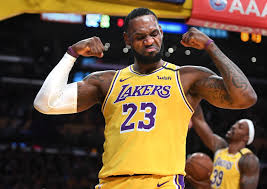
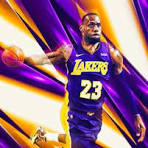
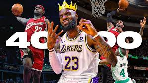

Only player in NBA history to record at least 30,000 points, 10,000 rebounds, and 10,000 assists,Click on the stats photo for a wiki of his stats.
| My Goat, Lebron James, is the great basketball player of all time 🐐
Boy oh boy where do l even begin. Lebron. honey, my pookie bear. I have loved you ever since I first laid eyes on you. The way you drive into the paint and strike fear into your enemies eyes. Your silky smooth touch around the rim, and that gorgeous jumpshot. I would do anything for you. I wish it were possible to freeze time so I would never have to watch you retire. You had a rough childhood, but you never gave up hope. You are even amazing off the court, you're a great husband and father, sometimes I even call you dad. I forever dread and weep, thinking of the day you will one day retire. I would sacrifice my own life it were the only thing that could put a smile on your beautiful face. You have given me so much joy, and heartbreak over the years I remember when you first left clevenland and its like my heart got broken into a million pieces. But a tear still fell from my right eve when I watched you win your first ring in miami, because deep down, my glorious king deserved it. I just wanted you to return home. Then at last, you did, my sweet baby boy came home and I rejoiced. 2015 was a hard year for us baby, but in 2016 you made history happen. You came back from 3-1 and I couldn't believe it. I was crying, bawling even, and I heard my glorious king exclaim these words, "CLEVELAND, THIS IS FOR YOU!" Not only have you changed the game of basketball and the world forever, but you've eternally changed my world. And now you're getting older, but still the goat, my goat. I love you pookie bear, my glorious king. Lebron James😊🫶🏾❤️ |
|

Lebron James inspired me to want to play basketball and be just like him while I was a kid but they when I got older I knew that wasnt going to be possible with my height but I stuck to it and played even tho I couldnt have the same playstyle but his mentality stuck with me and I wanted to be the best I could at what I did on the court and that just made me hustle on defense and never give up on a play and try my hardest. |
|

You can just feel the aura from this picture alone. |
|

As you can see if you click on the iamge above you will see 10 minutes straight of My Glorious King doing lengendary unbelievable things. |
|
Only player in NBA history to record at least 30,000 points, 10,000 rebounds, and 10,000 assists,Click on the stats photo for a wiki of his stats. |
| Achievements | |
|---|---|
| Lebon James High School Awards | High School Awards |
| Lebon James Olympic Awards [&] Stats | Olympic Awards |
| Lebron James Awards | Lebron James All-Time Awards |